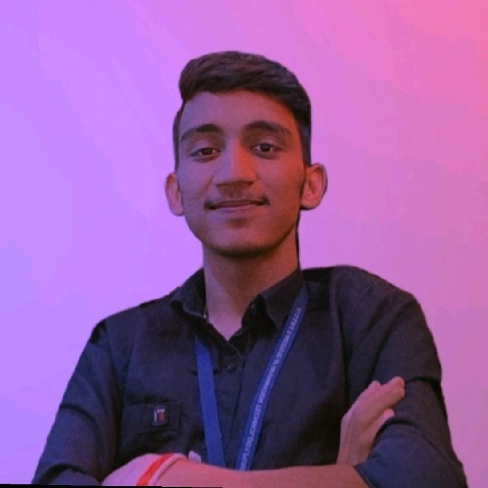

Tushar Purushottam Bhoge
Linkedin-linkedin.com/in/tushar-bhoge-60810921a

Summary
I am pursuing B.Tech(S.Y.) Engineering in Electronics and Telecommunication Branch from AISSMS IOIT college Pune.
More intrested in Development feild , currently developing skills regarding Web development.
I am very Enthuciastic, Hardworking, Dedicated to my work.
Education
- 10th - Dnayndeep Vidhyalaya Rupeenagar.(97%)
- 12th - Sau. Anusaya Wadhokar Uchch Madhyamik Vidhyalaya Rupeenagar.(75%)
Work experience
- Founder of Nakama Clothing Brand.
- Head of Editorial department in college committee called TESA.
- Managed Finance of Company called Gurukrupa oil Soap Industry.
Skills
- Basics of
- C language.
- Python language
- C++ language
- Css
- Crafting
- Designing Gadgets
Awards
- Best Student Awards in 2021.
- 3rd Rank in 10th std.
- Part of Genis book record - Fort Making competition - First Prize.
- 2nd prize in Science Fair competition.
Other
Currently Doing
Contact details